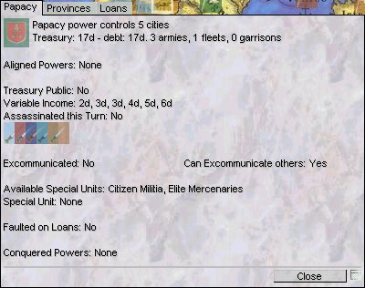

"Machiavelli recreates the balance-of-power struggle in Renaissance Italy from 1454 to 1529. Machiavelli can be played by two to eight players (five to six is ideal). Each player controls a major state of Italy or a neighbouring country and uses diplomatic and military force to conquer territory and fulfill the game's victory conditions. If you are power mad, treacherous by nature and can lie with a straight face, then Machiavelli is the game for you!"
This document describes the UI for the computer adaption, and quick descriptions of the mechanics of the game. This information is supplied merely as an overview to my adaptation. If you wish to play the game, go and buy yourself a copy of the Avalon Hill boardgame, or petition Hasbro for a commercial adaptation of this fine game.
This adaption has been a private development, and is not associated in any way with Avalon Hill or Hasbro Interactive.
Machiavelli and Diplomacy are trademarks of Avalon Hill.

Machiavelli requires DirectX 5.2 or later to be installed on your computer. The latest version can be downloaded directly from Microsoft.
| Operating System | Windows 95/98/NT 4sp3/NT 5 |
| DirectX | 5.2 or later |
| CPU | 133MHz |
| Memory | 16Mb |
| Disk space | 10Mb |
| Graphics Board | 640x480 (or higher) @ 16bit High-Color |
The Entrance screen is presented on starting the Machiavelli applications and provides a central point for accessing the games functionality.
Check one of the radio buttons and click the OK button to continue.
Start a New Game allows both Hotseat, where two or more players share access to the same computer, and joining or starting a new Network game, where each player exclusively controls a computer.
Load Saved Game allows a previously saved game to be continued.
Tutorial is a 5 minute interactive guide through the basics of ordering your units, chatting with other players, and important user interface panels. It follows the Example of Play included in the original board game.
Scenario Builder allows you to modify
existing scenarios, and create your own new ones.
*** Not Yet Implemented *** though data is
currently read from human readable map and scenario specification files
so it is easy to modify or even add your own entries.
Help opens up a panel containing this document and the program About Box detailing the version and certificate information.
Exit will close the Machiavelli application, returning you to the Windows desktop.
The tutorial directs you through the first three turns controlling the Venice power in a reduced game. It will show you how to navigate from one phase to the next, enter orders for your military units and highlight important panels you will be using to play Machiavelli.
The tutorial is started from the Entrance Screen.
The tutorial is composed of a series of steps, containing a description of the step highlighted in orange at the upper center of the game. To move onto the next phase, either click the OK within the descriptions orange rectangle or completing the action described.
The tutorial should take 5 minutes to run through.
Once you have started a new game or joined an existing game you will be presented with the map board.
Covering the entire screen is a section of the scenarios map board. The board is split up into areas. Land areas are called provinces. Some provinces also contain cities, shown by a single solid black circle. Cities may be fortified, in which case the city is surrounded by a black halo.
Three types of military units may be present on the mapboard. Army units may only occur in provinces. Garrisons can only occur in fortified cities. Fleets can be present in either sea areas or provinces bordering a sea area.
The map board can be scrolled by either moving the mouse pointer to the edge of the screen, the cursor keys, or right button dragging.
Along the top edge of the screen you will see the name of the scenario on the left, and on the right the current phase and turn number.
Along the left hand edge of the screen you will see the controls and readouts associated with the current power.
The power is identified by its coat of arms towards the top left of the screen, with its name and current treasury total in ducats, and controlled cities total shown to its right. As well as a coat of arms, a colour is also associated with the power, and used to distinguish information associated with the power. This colour is shown in the border of the coat of arms, and used by the text to the right of the coat of arms.
Immediately below the coat of arms power related information specific to the current phase will be shown as you progress through the game.
Immediately above the coat of arms you will find an icon that once clicked will open a Power Properties panel for the current power. This describes the current characteristics and totals for the power, with details of its controlled areas, and outstanding loans on following tabs.
Games using the Advanced Rules will also contain a transfer icon, which opens the Transfer Power panel allowing you to donate ducats from your treasury, and assassination units to another power.
Above these controls you will find the Finish button. When you have finished entering your actions for the current phase, clicking the Finish button will inform the system that you are ready to move onto the next phase of the turn. Once all the players have Finished, the game will move onto the next phase.
Feedback on which powers have already finished is shown in a thin column to the left of the Finish button. A rectangle filled with the powers associated colour will be drawn for each finished power. The tool tip, shown by holding the mouse pointer still over the control for a second, also displays this information.
In a Hotseat game you can change the current power by clicking on the coat of arms, then choosing the new power once the screen blanks out.
While all the powers coats of arms are unfurled, the current power will be lit up brighter than the others.
Accelerator Key: P
Then Left and Right cursor keys can be used to change the power,
with Return to select it.
Along right edge of the screen you will see game information. The controls and text shown along the right edge is shown exactly the same for all players of the game, whereas the controls and text along the left hand edge of the screen in specific to your power.
The bulk of the space is set aside for information particular to the current phase.
At the top of the column you will find a number of icons which open panels on various behaviour of the game.
The Help icon opens the Help panel containing the program About box, Manual and Rules of Play.
The New Game allows you to start a new game.
The UI Options icon opens a panel that allows you to change various UI options that include screen resolution, use of sound, etc. Each machine in a network game may independently set their own UI options.
Scenario Information which lists the current scenario criteria, and power standings, past power actions and a graph of power relative totals.
The Chat panel allows textual communication between powers.
The Quit Scenario icon allows you to abort the current game and return to the Entrance Screen.
In the Hotseat game an additional Next button will be added. This performs the equivalent of each player clicking the Finish button for their power. It is a purely a speedup for those times when most/all players do not want to enter any actions during a phase.
Frequently during the course of the game lists of units, orders and provinces will be displayed along the left and right edges of the screen.
To refocus the map on the location of the counter or area associated with listed item, click on the goto icon associated with the listed item. Additionally if you hold the mouse pointer still over the goto icon it will pop up some descriptive information of the item.
On starting a new game, or joining one, you will initially be presented by a welcome panel in the center of the screen which lists the playing powers with the name of their players.
In the case of a network game, you may have to wait until all the players join. You will be given feedback as players join.
Once you are ready to start click the Finish button at the top left of the screen. As soon as all the powers have done likewise you will move onto the first phase, and the game proper will start.
The game progresses from one turn to next, until one power meets the victory conditions specified when the game was being created. Each turn is composed of a number of phases, each documented in the following section.
The current turn and phase are shown on the white bar at the top of the screen.
If a power has won by meeting the Victory Condition as defined when the game was created, then that player is declared victorious.
A panel declaring the victor and listing the relative standings of all the powers is shown.
Players can either continue playing or start a new game.
The Start of Turn panel displays a summary for each of the powers; controlled cities, treasury, total debt, total army units, total fleet units and total garrisons.
Power summaries are ordered by their success, and the details for the current power are highlighted.

The Famine Marker Phase only occurs during the Spring turn, and if you checked the Natural Disaster when creating the game.
A number of provinces are randomly chosen, and in each a Famine Marker counter is placed.
All the effected provinces are displayed along the right edge of the screen, split by the power which controls them, if any.
Provinces controlled by the current power that are effected are listed along the left edge of the screen.
Then in turn from the top of the board you will see Famine Marker counters added to each of the effected provinces.
The effects of Famine are only experienced at the end of the turn, so it may be possible to move your military units to a safe province.
If no provinces were effected by famine the phase will automatically advance to the next after a short pause.
The Income & Military Unit Adjustment Phase only occurs during the Spring turn, except for the first turn.
If you checked the Advanced Rules option when creating the game, you will be presented with a panel listing the income in ducats.
The total income is split into income from provinces you control or have a military unit in, sea areas containing one of your Fleets, cities you control or have an unbesieged Garrison in, and variable income from your state, conquered states and some cities you control. The amount of variable income received is based on a die roll. All powers variable income is calculated from the same die roll.
You receive 1 ducat for each named province, except for those with the actual income listed alongside.
Click OK in the panel once you are finished examining the information.
Each power secretly decides which military units on the map board to keep, which to discard, and if any new units are to be created.
Once all powers have clicked finished, the result of the all powers adjustments will be unveiled.
The current powers existing military units are listed along the left edge of the screen.
Clicking over one of your existing units on the map board will remove it, while clicking over an empty home province or city in your home area will create a new military unit there.
Units to keep are shown on the map as normal. Units to disband have a red cross overlaying the counter on the map. Units to create have a red box around their map counter.
If you are playing with the basic rules, Advanced Rules was not checked when you created the game, then the number of units you can create or delete is determined by the number of cities you control.
If you have more cities than military units then you can create up to the difference in new units. You are not allowed to remove any units.
If you have less cities than military units, then you have to remove enough military units until the two totals match. You are not allowed to create any new units.
If you checked the Advanced Rules when creating the game, the number of military units you are allowed on the board is determined by you current treasury.
Each unit has an upkeep cost, which you must pay to stop the unit from being removed from the board. You can create as many new units as you can afford, though you are still limited to creating them in home areas with cities.
All normal units cost 3 ducats a year, whether they are new or this is upkeep for an existing unit.
You will not be allowed to Finish this phase if your units will force your treasury into a negative value.
If you checked the Special Units when creating the game, you will be allowed to flag one of your military units as being a better type of unit than the normal Condottieri.
Powers can be restricted in which special types of units they can employ. The Power Properties panel lists which types are available.
The type of each unit is indicated along the left edge of the screen next to the units goto icon. You can change the type for new units by clicking over its indicator. A tool tip gives information on the types characteristics.
You can only set the type of a unit when you are creating it, and only if there are no existing special unit types, or you are disbanding the existing special unit.
Once all powers have finish adjusting their units by clicking the Finish button then all the powers adjustments will be revealed.
All the effected military units are displayed along the right edge of the screen, split by the power which added/removed them.
Military units of the current power are listed along the left edge of the screen, split by whether they were added or removed from the map board.
Then in turn from the top of the board you will see their counters being added or removed from the board.
The Plague Phase only occurs during the Summer turn, and if you checked the Natural Disaster when creating the game.
A number of provinces are randomly chosen, and any military units in the effected provinces are removed from the map board.
All the effected military units are displayed along the right edge of the screen, split by the power which controlled them.
Military units of the current power effected are listed along the left edge of the screen.
Then in turn from the top of the board you will see their counters removed from the board.
If no provinces were effected by plague the phase will automatically advance to the next after a short pause.
Diplomacy is the core of Machiavelli, and it is during the Diplomacy phase that players can split up and devise schemes and plots with some of the other players in the game.
If the Excommunication optional rule was checked during the game creation, the player controlling the Papacy power has the option to excommunicate one of the other players for the duration of this Diplomacy phase. An excommunicated power may not communicate with any other power. If a power communicates with an excommunicated power, they too become excommunicated for the duration of the Diplomacy phase.
The Papacy power should click the power he would like excommunicated, then click the Excommunicate button.If the Papacy power does not wish any power to be excommunicate this turn, then click the Pass button.

All the other powers will be informed of the choice, and should Finish, before the Diplomacy phase proper starts.

During the Diplomacy phase you will find that the Chat panel allows you to select a subset of the total powers so that you can indulge in private discussions. Excommunicated powers are indicated by overlaying an excommunicated marker, and you will be warned before communicating with an excommunicated power.
You may find it useful to open more than one Chat panel during this phase to carry on discussions with more than one group of players at one time.
The Diplomacy phase is time limited, and will force the game onto the next phase even if some players haven't Finished once the duration is reached.
The duration is set from the "Game Options" page of the New Game wizard. You may set the first Diplomacy phase to be longer in duration than subsequent phases, as the bulk of alliances are set during the first turn.
If the Money Lenders optional rule was set during game creation then you will be able to borrow ducats from one of the fantastically wealthy and powerful international bankers and financiers which arose during the period.
A power may borrow up to a total of 25 ducats in a series of one or two year loans. Failure to repay leads to the same effects as a successful assassination, the power will be refused credit from then on, but all the existing outstanding loans need not be paid.
First a power must repay any existing loans that are due that turn.
Click either the Repay to pay the loan with interest back in full, or Refuse if you refuse to pay the loan, at which point you will suffer the consequences.
If you have insufficient funds to immediately repay the due loans, then Refuse will be your only option. At this stage it is not possible to gain a new loan to cover the demands of the existing loans.
Future outstanding loans for the power are listed in the lower half of the panel. For each outstanding loan the original amount, due date and amount including interest that must be repayed.
If you have no loans to repay, but other powers do, you will have to wait for them to make their choice before being able to continue. The coats of arms of those powers you are still waiting for are listed, any if any power defaults on a loan their coat of arms will be shown in the next row.
If a power refuse to repay a loan, the power suffers the same effects as if assassinated.
The disbanded units and rebellions for all defaulting powers are listed along the right edge of the screen, split by power.
Disbanded units and rebellions effecting the current power are listed along the left edge of the screen.
Each effect in turn will then be indicated on the map board.
Every turn you are able to set up both a one year or two year loan. The two year loan has a higher interest rate. Only a total of 25 ducats may be borrowed at any one point.
To create a new loan click on the up/down arrows to change the amount borrowed. The amount paid into the powers treasury is shown first, followed by the due date and then the complete amount that must be repaid to the money lenders which includes interest.
There are two sets of controls, the top for a loan that must be repaid one year hence, the lower for a loan that must be repaid two years hence.
A power may create no new loans, a new one year loan, a new two year loan, or both a one year and two year loan,
Current outstanding loans for the power are listed in the lower half of the panel. For each outstanding loan the original amount, due date and amount including interest that must be repayed.

During the Order Writing Phase you may give a single order for each of your units. There are six to choose from. You make these orders in ignorance of the orders the other powers are giving to their own units.
Once you finish this phase, you will see all the other powers orders in the Movement and Conflict Phase, and whether your own orders have been successful.
All of the powers military units are shown along the left edge. By default they are set to the Hold order.
Positioned to the left of each order is the goto icon. Clicking on this will scroll the map board to show the units counter, and highlight its position with a ripple animation. Additionally if you hold the mouse pointer still over the goto icon, a textual description of the units order is displayed.
To enter a new order for a unit, click with the left mouse button over the units counter on the map board, drag the counter to its destination area or city and let go. As you are dragging the counter you will see an arrow extending from the counters start position.
Note that the map board will scroll if you mouse pointer is at an edge while you are dragging a unit.
Only provinces which for which there is a valid order for the unit will stay visible, all others will be dulled. Ending the drag over such a dulled province will cancel the order.
If there is only one valid order you will see that the order description on the left hand edge of the screen changes to reflect the new order.
If you move the mouse pointer over the counter on the map board and hold it still, you will see that a textual description of the order is shown. This is useful if you cant read the abbreviated orders.
Sometimes there are more than one valid orders for a unit to an area. In this case when you drop the counter after dragging it, the screen will be put in shadows except for the area around the drop position. Positioned in a circle around the drop point the choice of legal orders will be shown. The order abbreviation is shown, coloured by the power of the involved unit. Clicking over one of the order abbreviations will select that as the new order for the unit.

Order a Fleet or Army to move to an adjacent area. If there is a unit already in the destination area, or another unit is attempting to move into the unit, then you unit with superior support will be one that succeeds.
An Army can move further than an immediately adjacent area if it can be Convoyed by one or more Fleets. Both the current province of the army, and the destination, must be coastal provinces. Each intervening sea area must have a Fleet which Convoys the Army. If you are missing 1 or more convoys then a red ?? will be overlayed on the Advance orders description.
To enter an Advance order, drag the units counter to the destination area.
Orders a Fleet or Army to besiege an enemy held fortified city in the area which the unit is currently located. The same unit must besiege for two consecutive turns to be successful. The garrisons support is immaterial, as they starve at the same rate.
To enter a Besiege order, drag the units counter to the city in the same province as the unit.
Orders a Fleet, Army or Garrison to remain in place. This is the default order if the unit is given no other order, or its order becomes invalid.
To enter a Hold order, drag the units counter over itself.
Orders a Fleet, Army or Garrison to support some other unit carrying out its orders. The Supporting order must have been able to move to the destination of the supported unit to be valid. The unit does not move from its location.
To enter a Support order, drag the units counter to the area or city which the unit you wish to support is advancing to, or for other orders, is stationed in.
Orders a Fleet to convoy an Army with an Advance order through the sea area it occupies. Once a Convoy order has been successfully entered you will see that the arrow from the armies present province to its destination province will be directed through the Fleets sea.
To enter a Convoy order, drag the units counter to the province which is the armies destination of its advance order.
Orders a Fleet, Army or Garrison unit to change to a unit of a different type. Conversions can only take place in a province with a fortified city. An Army can convert into a Garrison, and a Garrison can convert into an Army or Fleet if the city is a port. To convert from a Fleet to an Army takes two turns, as you have to convert into a Garrison first.
To enter a Conversion order, drag the units counter to the provinces city if its a Fleet or Army, for Garrisons drag the units counter from the city to its surrounding provinces.
It is sometimes necessary to enter supposed orders for units belonging to other powers. Examples of when this would be useful are if you will be convoying or supporting a unit belonging to another power, or you expect to take control of the unit following a successful Buy Enemy Unit expenditure.
The unit will not follow the supposed orders you have entered. If the power does order the unit to perform an order matching your supposed order for it, then your own unit orders which rely on it occurring will not happen. If the power gives a different order for the unit to perform, then your own unit orders which relied on the supposed order will fail, and default to Holds. All of this can only be found out during the Movement and Conflict Phase when orders from all the powers have been put together.
Making a supposed order for another powers unit is just the same as setting an order for one of your own units. Drag the units counter with the left mouse button to a destination, possibly choose an order if there are multiple legal orders.
You will see the description of the order under the Other power orders section along the left side of the screen.
If the Advanced Rules was checked during game creation then you will also be able to enter Expenditures.
Any number of expenditures may be chosen, though each has a cost. Expenditures are carried out during the Ducat Expenditure Phase, with the exception of assassination attempts which are carried out during the Assassination Phase.
Expenditures are resolved in the order which they are written, so it can be important to order then in the most effective way.
Expenditures are shown along the left edge of the screen under the Expenditures heading.
Associated with each expenditure you will see a number of controls. The first will delete it. The next two move the expenditure up or down in the list, so it is earlier or later in the order in which expenditures are carried out. The final two change the amount of ducats that are spent on the expenditure. Bribes may be negated through counter bribes, so it may be wise to spend more the minimum cost to ignore the effects of any counter bribes.
Expenditures are entered in a similar fashion to orders, and you will often see both orders and expenditures listed as legal choices after dropping a counter when wishing to define a order.
For all except the assassination attempt, click either on the relative province or unit that is to be effected. For assassination attempts, click on the assassination unit for the power listed below your power coat of arms on the left edge of the screen.
(A) Famine Relief Expenditure 3d
Remove a Famine Marker from a province.
To enter expenditure, click over province with Famine Marker.
(B) Pacify Rebellion Expenditure 12d
Remove a Rebellion Marker from a province.
To enter expenditure, click over province with Rebellion Marker.
(C) Conquered Province To Rebel Expenditure 9d
Start a rebellion in an enemy controlled province that is not part of the enemies home country.
To enter expenditure, click over province.
(D) Home Province To Rebel Expenditure 15d
Start a rebellion in an enemy controlled province that is part of the enemies home country.
To enter expenditure, click over province.
(E) Assassination Attempt Expenditure 12+d
Attempt to assassinate a power. You must have an assassination unit for this power. You gain one for each power at the beginning of the game, and can gain more by other players transferring them to you, probably as part of a deal. The assassination unit is used up in the attempt, whether it is successful or not.
There is only a 1 in 6 chance of the attempt being successful. For an extra 12 ducats an additional 1 in 6 chance of the attempt being successful is.
To enter expenditure, click over assassination unit for power.
(F) Counter-Bribe Expenditure 3+d
The expenditures following this one are considered bribes. It is possible to negate their effects by applying a counter-bribe to the unit. If the cost of the counter-bribe reduces the bribe to below its minimum cost, the bribe fails.
To enter expenditure, click over the units counter which may be bribed.
(G) Disband Autonomous Garrison Expenditure 6+d
Remove a Garrison controlled by the Autonomous power from the board.
To enter expenditure, click over the Garrisons counter.
(H) Buy Autonomous Garrison Expenditure 9+d
Convert a Garrison controlled by the Autonomous power to be one of your own. You can give orders for the garrison to accomplish this turn.
To enter expenditure, click over the Garrisons counter.
(I) Convert Garrison Unit Expenditure 9+d
Convert a Garrison unit controlled by another power into an Autonomous Garrison.
To enter expenditure, click over the Garrisons counter.
(J) Disband Enemy Unit Expenditure 12+d
Remove the unit controlled by another power from the board.
To enter expenditure, click over the units counter.
(K) Buy Enemy Unit Expenditure 18+d
Convert a Army, Fleet or Garrison controlled by another power to be one of your own. You can give orders for the unit to accomplish this turn.
To enter expenditure, click over the units counter.
If the Advanced Rules option was checked during game creation this phase will be seen.
Expenditures from all the powers are displayed along the right edge of the screen, split by the power which controlled them.
Expenditures of the current power effected are listed along the left edge of the screen.
If an expenditure was not successful, the description is crossed through with a red line. An expenditure can be unsuccessful if either the power does not having sufficient funds or the actions of another power make the expenditure invalid.
Assassination attempts are not resolved until the following Assassination Phase, and are marked with red ?? mark.
Then in turn from the top of the board you will see the outcome of each of the successful Expenditures. Counters may be removed, added or mutated.
If no expenditures were entered,the phase will automatically advance to the next after a short pause.
If the Advanced Rules option was checked during game creation this phase will be seen.
If no assassinations were attempted,the phase will automatically advance to the next after a short pause.
For each of the powers that an assassination attempt was directed at list all the attempts by the powers which directed it. For every 12d spent, there is a 1 in 6 chance of a successful attempt. A die is shown for each attempt, and a 6 indicates a successful.
The result of the attempts is shown on the right hand side of the panel, either Failed or Succeeded.
If any assassination attempts were successful, the map is updated to show the effects.
The disbanded units and rebellions for all assassinated powers are listed along the right edge of the screen, split by power.
Disbanded units and rebellions effecting the current power are listed along the left edge of the screen.
Each effect in turn will then be indicated on the map board.
Orders from all the powers are collected and resolved to find out which succeeded, and which failed.
All the orders are displayed along the right edge of the screen, split by the power which controlled them.
Any units that have been forced to retreat, or in the case of Garrisons, disbanded, are listed lower on the right edge of the screen.
Orders from the current power are listed along the left edge of the screen.
An unsuccessful order is indicated by crossing the order description through with a red line.
On the map board arrows for successful orders are drawn with a solid tail. Unsuccessful orders are drawn with medium length dashed segments. During the Order Writing phase, all order arrows were drawn with short dashed segments, to show they are prospective.
Then in turn from the top of the board, each of the successful orders is carried out. For advances, besieges and conversions you will see the units counter following their arrows.
If no orders were entered the phase will automatically advance to the next after a short pause.
If any units were forced to retreat then the powers whose units that have to retreat have the opportunity to decide where to move them to.
Counters of units that have been forced to retreat are highlighted with a red halo.
All units that have been forced to retreat are displayed along the right edge of the screen, split by the powers which control them.
Retreating units of the current power are displayed along the left edge of the screen. The order is shown rather than the unit.
For each of the current powers retreating units you will be presented with a circular chooser. The choice always includes the Disband order. If province has an unoccupied city, you will be able to retreat into the city. Additionally all adjacent provinces which the unit could move to are included.
Choosing one of the options will move the circular chooser onto the next unit of the current power which is retreating.
Click Finish once you have completed your units retreat orders.
The retreat orders from all the players are now shown.
If two units retreat into the same area then they are both disbanded.
Each power in turn has a chance to move up to two of their units as far as they like as long as they only pass through empty provinces. Units may enter other powers provinces as long as their owner agrees.
As you drag a unit the trail which the unit will take is shown as a dotted line. If the unit must pass through another powers province, then that province will be highlighted.
The Famine Effects Phase only occurs during the Spring turn, and if you checked the Natural Disaster when creating the game.
Any military units in provinces with Famine Marker counters are removed from the board.
All the effected military units are displayed along the right edge of the screen, split by the power which controlled them.
Military units of the current power effected are listed along the left edge of the screen.
Then in turn from the top of the board you will see each of the effected military units are removed from the board. Once complete all the Famine Marker counters are also removed from the board.
If no provinces were effected by famine the phase will automatically advance to the next after a short pause.
A rebellion counter can be removed if the power controller of the province has a military unit Hold for one turn, or any other power successfully Advances into tho area.
All removed rebellion counters are displayed along the right edge of the screen, split by the power that controlled the province.
Rebellion counters in the current powers controlled area are displayed along the left edge of the screen.
Then in turn from the top of the board, each rebellion counter is removed from the board.
Properties for the current power are available by clicking the
"Open properties for power" icon.
Accelerator key: R
The first page of the notebook contains a standard summary of the powers current state; controlled cites, treasury, debt, total armies, total fleets and total garrisons.
Ducats from the powers treasury and its assassination units may be transferred to other powers.
The panel can be opened by clicking the "Open Transfer to
Power" icon.
Accelerator Key: T
The amount of ducats to transfer are changed with the up/down
controls.
Select one or more assassination units.
Then choose one of the other powers, and finally transfer to the
power by clicking the Transfer button.
All players can be informed of the details of the transfer.
Multi-page panel containing the program About Box, this manual and the Rules of Play from the original board game.
The panel can be opened by clicking the "Open Help"
icon.
Accelerator Key: F1

Access to the UI options which can modify the appearance and interface of the game. This only effects the game on this machine. Other players in a network game see no effect from you changing the UI options.
The panel can be opened by clicking the "Open UI
options" icon.
Accelerator Key: U
You may change between all the supported screen resolutions of
your graphics card.
*** Pre-release also supports Window mode -
only runs in 16bit color modes ***
Checking Order Descriptions will include a textual description of orders and expenditures in their tool tip text. This may be quite a lot of text, but will help if you are unused to the abbreviated form.
Checking Debug Readout displays the current and recent Frames Per Seconds in a small bar at the top left of the screen.
Checking Write Orders during Diplomacy allows orders and expenditures to be entered during the Diplomacy Phase, as well as the usual Order Writing Phase.

This wizard allows you to create a new game, or join an existing Network game waiting for players.
It can be opened from the Entrance Screen, or from the
"New Game" icon found on the main map board.
Accelerator Key: N
The first step is to choose the type of game.
A Hotseat game is where all the players share the same computer. They take turns entering their actions. You can change the current power by clicking on the current powers coat of arms towards the top left of the map board once play starts.
The Order Writing Phase really requires players to be able to secretly enter their orders, this may effect how/where you set up your computer, and if you engage in any procedures to make access to the computer private for this period.
In a Network game each player has their own computer which they have exclusive access to. Computers can be connected by modem, serial port, IPX or TCP/IP local network or through the internet.
For each Network game, one player will Start a New Game and specify the scenario, number of players, rules, etc. Once complete all the other players Join the Game until the full compliment of players is reached, and the game can start.
A number of different scenarios are supplied with Machiavelli, and it is possible to add your using the Scenario Builder.
A scenario is played on a map board, and specifies which powers are available, and their initial home areas and military units.
Checking the title of a scenario will display its description on the right hand side of the panel.
For each scenario there are a number of different allocations of powers. This is usually split by the number of human players.
Checking a player variant on the left hand side of the panel will display its details on the right.
For each player, the number of random powers and specific powers are listed. On starting the game, all but one of the powers will be aligned with the other, and you will control them all as a single power.
Some variants will also have neutral powers. The areas controlled by these powers are considered off limits for the game.
An autonomous power is one whose military units are replaced with autonomous garrisons, but they can be attacked and control gained of their provinces.

The game may be customised by a number of options. These may not be changed once the game has started.
The Rules section allows you to choose which, if any, of the advanced and optional rules you wish to use. These enhance the realism of Machiavelli at the cost of added complexity, and longer games.
Checking Advanced Rules adds finance, expenditures, rebellions and assassinations.
The finances of a power are measured in ducats. Income is generated from controlled provinces, sea areas, cities and variable power and city income, at the start of every Spring turn. Ducats may also be transferred to another power.
Ducats can be used for bribing other powers, upkeep and new military units, and can be used to buy expenditures during the Order Writing phase. Expenditures allow you to remove famine markers, start rebellions, buy enemy units already on the board, etc.
Assassination attempts may be made on other powers. If successful, the powers military units become temporarily paralysed, rebellions appear in their provinces. The original player continues playing as his own successor. An assassination attempt can only be attempted if you have an assassination unit matching the power you wish to assassinate. You start the game with such a unit for each of the other powers, and you may trade them with other powers during the game.
Checking Excommunication allows the Papacy power, or which ever power has it as an aligned power, may excommunicate one power during the Diplomacy phase. No other power may communicate the excommunicated power, else they become excommunicated too.
Checking Natural Disasters introduces the random effects of Plagues and Famines. These killed infinitely more people than war during the eras often depopulating provinces and destroying military units (those that did not die of the disease would often desert to escape it).
Plagues can occur during the Summer turns, and all military units in the randomly chosen provinces are immediately removed from the map board.
Famines can occur during the Spring turns. At the start of the turn Famine Markers are placed in randomly chosen provinces. No military units are effected until the end of the turn, when any units remaining in the provinces are removed from the map board.
Checking Special Units allows one of your military units to be considered a special unit with either improved military strength and/or improved resistance to bribery from other powers. Special units have greater upkeep costs than the standard Condottieri military units.
There are three different types of special unit; citizen militia, elite mercenaries and elite professionals. Powers may have access to only a subset of the types.
Checking Strategic Movement allows each power to move any two of their military units at the end of the turn as far as they like through friendly provinces.
Checking Money Lenders allows powers to borrow up to 25 ducats. Failure to repay the loan in one or two years with interest will stop the availability of loans to the power, and they suffer the same effects as if they had been assassinated.
Checking Conquering results in the home areas of a power being added to your own if you control all of the provinces making up their home area. You may only add new military units in a home province.
Victory Condition defines the criteria of choosing which power has won the game. This may occur at the start of each Spring turn.
Some phases are time limited. Normally once all powers have indicated that they have entered all their actions for a phase, the game moves to the next phase. For a time limited phase this still holds true, but if all the players haven't finished after a set duration the game moves to the next phase anyway.
In Network games you have to choose which type of network connection will be used to synchronise the players machines. Machiavelli uses DirectPlay and by default supports modems, serial cables, IPX and TCP/IP which is used by the internet.
The list of available connections is shown on the left, checking one of these will allow you to enter additional criteria for the selected connection on the right hand side of the panel.
IPX networks do not require any additional information as they automatically search for games on the local network.
TCP/IP provides a number of options. You may search for games on the local network, though this isn't very useful for the internet. If you know the address, eg 127.0.0.1, or name of a machine, eg scooby.net, of the server machine you wish to connect to you may enter that. The past server addresses you have connected to are also available if you often connect to the same server.
Note that for some internet dial up accounts your internet machine address may change each time you connect to the internet. If this is the case either start new games from a machine with a fixed address, or you may find out your machines current address by using the "winipcfg" Windows command from the Run entry of the Windows Start menu before running Machiavelli. You will need some means of communicating this to the players who wish to join the new game.

Finally when joining a network game you will be shown a list of games found using the selected connection. Select one of these and click Finish to start playing.
For each available game you will be shown the title of the game and the number of players currently joined.
Save the current game to a file local to this machine.
The panel can be opened by clicking the "Save Game"
icon.
Accelerator Key: S
Enter the name of the file to be saved, and click OK.
Open a saved game local to this machine.
*** Newer versions of pre-release
Machiavelli may not be able to load saved games from previous
versions due to the file format changing ***
The panel can be opened by clicking the "Open Game"
icon.
Accelerator Key: O
Select one of the saved games, and click OK.
The state of the powers and mapboard of the game at the point of saving are shown on the right hand side of the panel for the selected saved game.
Display information on the current and previous state of the game, summaries of power standings, scenario description and game options.
The panel can be opened by clicking the "Open Scenario
Information" icon.
Accelerator Key: G
The summary and turn actions provide information for a specific turn which can be changed using the turn up/down arrows. Additionally the map of power units and information can be filtered by toggling the state of the powers coat of arms. All powers can be toggled on/off with the last icon.


The chat panel is used to send and receive text to other players.
The panel can be opened by clicking the "Open Chat"
icon.
Accelerator Key: C
Except for the Diplomacy phase, chat is sent and received by all the other players. During the Diplomacy phase, you can restrict the chat to only include a number of players, to help broker deals and alliances.
Text you wish to send to other players is typed in the field at the bottom of the panel. Then send it by clicking the Send button, or pressing return.

The chat panel, like other modeless panels can be toggled to a transparent state so that you can see through, and interact with the game board below the panel. This is useful if you are running on a lower resolution screen. The contents of panels automatically updates to reflect the changing state of the game.
Quit the game you are currently playing, and return to the Entrance screen.
The panel can be opened by clicking the "Quit
Scenario" icon.
Accelerator Key: Q
Machiavelli
2ed Adaption Copyright © David Jones 1999
Original Machiavelli Board Game Copyright © Avalon Hill 1980,
1995